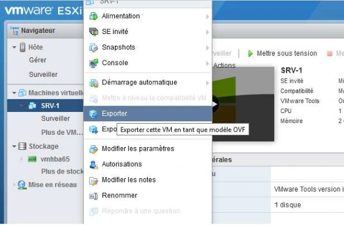
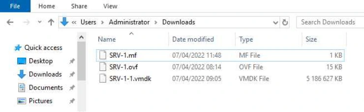
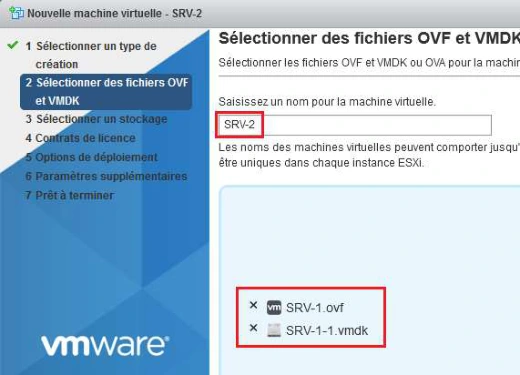

La transcription conserve les repères des pages du support. Les marques du centre et les valeurs de connexion propres au laboratoire sont neutralisées. Les visuels retenus sont isolés.
Solutions :
TP du Module 08 – Gestion des Modèles
Avant de démarrer ce TP, il convient d’avoir suivi les prérequis du Module 8.
Durée estimée
1 heure
Exporter et importer une machine virtuelle sous forme de modèle OVF d’un hyperviseur vers un autre
Disposer de deux hyperviseurs ESXi1 et ESXi2
Disposer d’une machine virtuelle SRV-1 hébergée sur ESXi1 (Atelier 3 réalisé)
Cet atelier a pour objectif d’illustrer l’exportation d’une machine virtuelle depuis l’hyperviseur ESXi1 sous forme d’un modèle OVF. Dans un deuxième temps, un import de ce modèle sera réalisée vers l’hyperviseur ESXi2.
Sur l’hyperviseur ESXi1

Le téléchargement doit commencer dans votre navigateur, les fichiers seront stockés localement sur votre système.
Sur l’hyperviseur ESXi2


Pour observer l’avancement du processus, cliquer tout en bas du navigateur sur « Tâches récentes » si cela n’a pas déjà été fait.